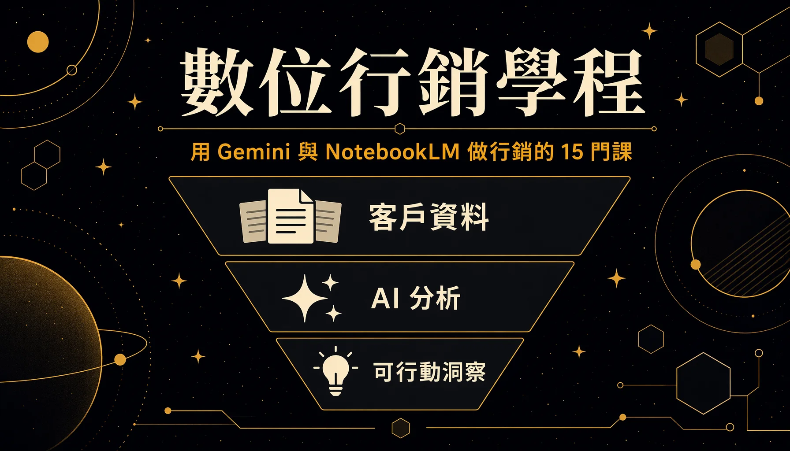

The Digital Marketing track is one of the three tracks in the Google Digital Talent Exploration Program, at 15 courses. It teaches marketers how to use Gemini and NotebookLM in daily work, aimed mainly at marketers without a technical background. Ten of them carry full course content, mostly Google short courses, each paired with a hands-on challenge that earns a badge on completion; the other five are Skillshop ads and analytics certifications, completed manually on a separate platform.
This is the second of three track records for the Google Digital Talent Exploration Program. The program overview sits in the overview entry, with the other two covering AI workplace literacy and Google Cloud.

# What the Track Teaches
The track's centre of gravity is handing the most time-consuming parts of marketing work to AI: writing content, finding material, running research, organising customer feedback, tracking competitor movement. Most of the 10 courses with content are shared with the AI Workplace Literacy track (the NotebookLM ones, for instance), and the marketing track puts them back into marketing scenarios and teaches them again. The five Skillshop certifications fill in ads and performance analysis, leaning towards hands-on practice.
# One. Laying the AI Foundation
- Generative AI: Understanding the Fundamentals — Before using AI, its capability boundaries and risks have to be understood: the hierarchy between AI and machine learning, the three learning methods, and the six limitations of foundation models along with the techniques that improve on them. For a marketer, the value is building the judgement to know why AI gets things wrong and how to get it right — grounding on the company's own data to reduce hallucination, for instance.
# Two. Gemini as a Marketing Productivity Assistant
This cluster covers turning Gemini into a reusable content and creative production line.
- Gemini Gems – Your Ultimate Marketing Sidekick — Building a customised AI assistant: set the four elements of persona, tone, format and goal, and train it into a specialist such as "marketing analyst" or "social media editor." Once built it acts as an extension of the team, and feeding it the same kind of material needs no background briefing again. The presenter's example uses one LinkedIn Gem to produce weekly social posts in their own voice, optimised for the platform and saving time.
- Content Generation with Gemini Made Easy — Using Gemini in the Docs side panel to ideate, outline and draft, producing video scripts, blog posts and headlines, and website copy; referencing existing Drive files in the prompt makes the draft fit the context more closely.
- Become an AI Art Director for Your World — Acting as image art director through plain text instructions in the Gemini app: multi-round iterative editing (AI remembers the previous change and layers on it), and image remixing (applying one image's style, colour and texture to another object). The three elements of an effective instruction are subject, composition and detail, so a marketer can revise visual material without knowing graphics software.
# Three. Research and Data Storytelling with Gemini
This cluster covers compressing time-consuming manual research and data analysis into a few minutes.
- Supercharge Research with Gemini — Using Deep Research for competitor audits and market research, scanning large numbers of sites automatically to produce a structured report. Three moves raise the quality: setting a role, specifying the output format, naming the sources; after submission the research plan can be reviewed and edited before it starts.
- Find the Story in Your Data — Using NotebookLM to turn raw survey data into a story worth reporting: ground the data, find the headline, connect the dots. Prompts carry an identity and a purpose ("as a PR person, produce a claim that would interest a journalist," for example), and looking for correlations across questions digs out hidden insight.
# Four. Customer Insight and Competitive Intelligence with NotebookLM
This cluster covers consolidating large volumes of scattered documents into actionable insight with NotebookLM, whose defining characteristic is answering only from sources the user uploaded.
- Customer Insights with NotebookLM — Consolidating large volumes of customer service call and chat transcripts into a single PDF for upload (the demo file runs past 500 entries and covers every supported language), extracting voice of customer across languages; questions can run at a trend level and an actionable level. The deep-dive conversation is an interactive podcast that takes live voice follow-ups.
- NotebookLM for Market Research — Treating it as an AI research and thinking partner, across three workflows: customer feedback analysis (grouping by sentiment and theme to find pain points), market and competitor research, content ideation and production. The Audio Overview works for listening on a commute.
- NotebookLM for Competitive Edge — Four steps of competitive intelligence: gather public material, ingest competitors' presentation videos through the YouTube integration, add internal documents for differentiating context, and extract insight (product launches, strategic pivots, positioning changes). Going further, it generates a SWOT analysis, or converts into a two-host podcast for the team to get up to speed.
# Five. Running Events with AI
- Streamline Event Planning with AI — Using a 200-person executive offsite as the example, Gemini runs through venue and theme ideation, fair group splits for icebreakers, shuttle scheduling against flight times, and post-event survey analysis. The shared structure of a good prompt is scale plus goal plus constraints plus specified output; logistics tasks can take both rules and an optimisation goal so AI handles the trade-off.
# The 5 Skillshop Certifications Off-platform
The track includes five certifications completed on the Google Skillshop platform, handled manually off-platform, with content leaning towards ad operation and performance analysis. These five do not appear on skills.google and have to be taken on Skillshop separately:
- Google Analytics Certification
- AI-Powered Performance Ads Certification
- Using Demand Gen to Create Demand and Drive Conversion
- AI-Powered Search Ads Fundamentals for Practitioners
- AI-Powered Search Ads Fundamentals for Strategists
# Three Things Worth Remembering
- Turning 500-plus customer service transcripts, multiple languages included, into customer insight within minutes — The traditional approach means listening to 30 calls manually at double speed, which is slow and covers little; NotebookLM consolidates every transcript into a single PDF, analyses across languages, and generates a podcast that takes voice follow-ups. This is the capability that puts an actionable conclusion in front of a manager straight after finishing the course.
- Producing a SWOT directly from external public material plus internal documents — NotebookLM can ingest a competitor's presentation videos through the YouTube integration, then set competitor movement alongside your own product documents to produce a SWOT that matches the real market situation, converting "what the competitor is doing" into "how we should respond."
- Building a reusable dedicated marketing assistant with Gemini Gems — One round of setting persona, tone, format and goal produces a Gem capable of writing social posts in the user's voice and optimising them per platform, with no background briefing needed afterwards. This is the clearest demonstration of AI shifting from tool to team member.